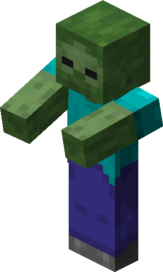
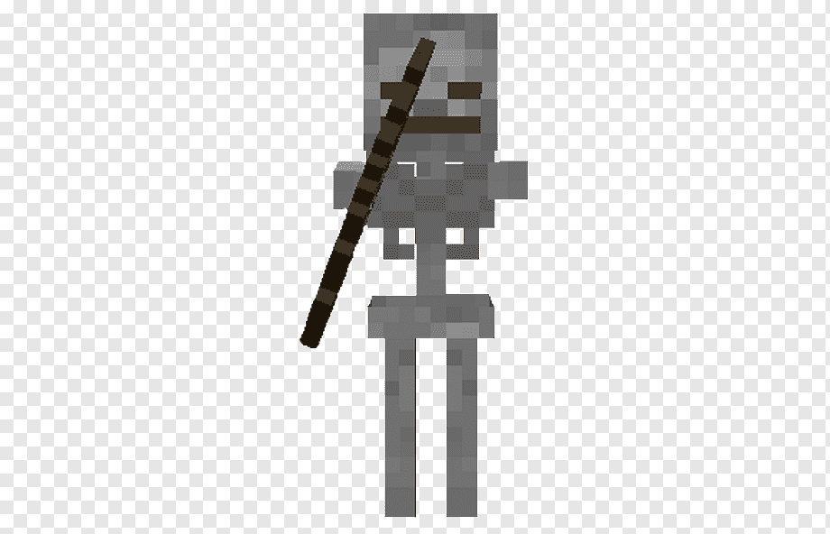
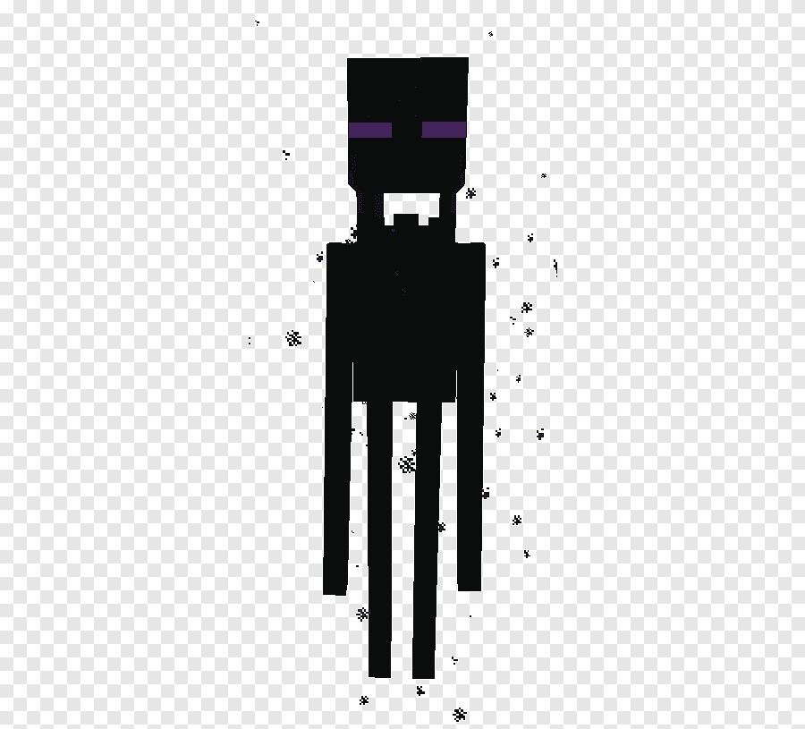

Zombie
 Zombie – najczęściej występujący w grze agresywny mob, który spawnuje się w ciemnych lub słabo oświetlonych obszarach. Zaatakuje gracza powoli do niego podchodząc i zada obrażenia poprzez kontakt. Podobnie jak szkielet, Zombie zapala się w świetle dziennym. Źródło
Szkielet
 Szkietet – to agresywny mob wprowadzony do gry w wersji Survival Test 0.24_02, który pozostał we wszystkich nowszych wersjach gry. Szkielety są dość groźnymi przeciwnikami, ponieważ strzelają do gracza strzałami. Tak samo jak zombie, szkielety pojawiają się w nocy lub w zacienionych miejscach (np. jaskinie), a rano płoną przy świetle słonecznym, aż umrą. Źródło
Enderman
 Enderman jest mobem neutralnym. Staje się agresywny, gdy gracz go zaatakuje lub zacznie patrzeć wprost na niego powyżej jego nóg z odległości mniejszej niż 64 bloki. Atakuje uderzając gracza rękoma. Źródło